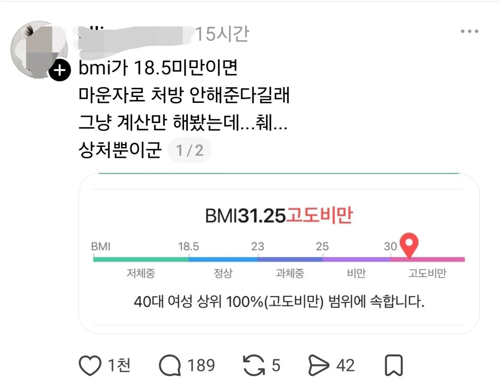

ㅋㅋㅋㅋㅋㅋ

ㅋㅋㅋㅋㅋㅋ
근육돼지 뇨속!
내가 24.7/체지방 26나오는데 겉으로는 큰 티는 안나지만
벗거나 입을때 체감 나는데 ㅋㅋㅋ
BMI지수 존나 빡빡해서 진짜 18미만이면 뼈밖에 없는 사람일껄 ㅋㅋㅋ
계산기까지 켜본 정성은 인정 ㅋㅋ
저대로라면 할머니 되기 어려우시겠는데
난 항상 과제충이던데
남자는 과체중~비만이 일반적일걸 운동 조금만 해도 과체중됨
거울보면 견적나오지않나
BMI 27인데도 의사가 그정도 아니라고 함
눈으로 봤을 때 좆돼지 아니면 안 해주는 듯
걍 립서비스 해준거임
요즘 개씹뼈말라 멸치한테도 허벌로 처방해주는게 위고비마운자로임
23.51 쉬벌 언제 과체중됐어 나 나이먹더니 뒤룩뒤룩 살쪄서 대지뇨속이었군 충격이다ㅋㅋㅋ
23이 과체중인것도 에바긴 해
키빼몸 100이 넘는건데
난 할마니한테 슬슬 살 좀 빼야겠구만 소리 들어봤우
떡튀순 + 치즈김밥
매주 5~6번 시켜 먹은 결과 무한 정크업 해버림
난..31.77 ㅠ 골격근 48kg 체지방율 18퍼 나오는데